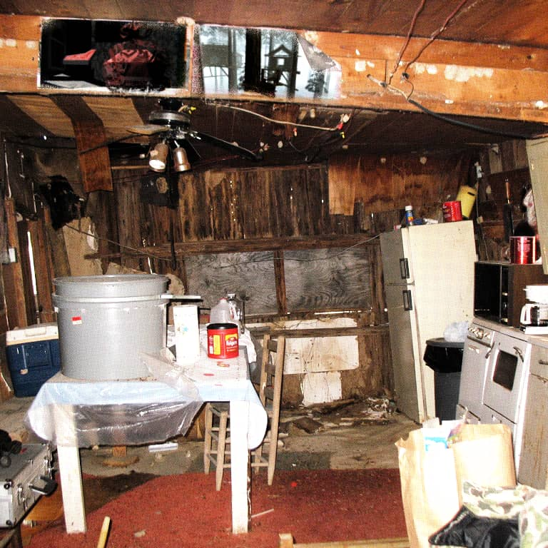

<body>
  <!-- https://www.flickr.com/photos/timduke/3020872809/ -->
  

  <a
    href="./70outhouse.html"
    class="hotspot cursor-move"
    style="bottom:0;left:10%;width:60%;height:10%;"
  ></a>

  <button
    data-border="sleek"
    class="EmptyFrame ForestBackground cursor-grab"
  ></button>

  <button
    data-border="broider"
    class="EmptyFrame ForestBackground cursor-grab"
  ></button>

  <button
    data-border="line"
    class="EmptyFrame ForestBackground cursor-grab"
  ></button>

  <s-cript target="assistant" >
    --- click
    Success does strange things to people.
    ==> click
  </s-cript>
</body>

<script type="module">
  // -- constants --
  const k = {
    class: {
      frame: "EmptyFrame",
      is: {
        visible: "is-visible"
      }
    },
  }

  // -- frames --
  /// the list of frames
  let $frames

  // -- main --
  function Main() {
    // set props
    $frames = document.getElementsByClassName(k.class.frame)

    // set initial state
    ShowUnusedFrames()

    // bind events
    d.State.listen("border", OnBorderChanged)
    for (const $frame of $frames) {
      $frame.addEventListener("click", OnFrameSelected)
    }
  }

  // -- commands --
  function ShowUnusedFrames() {
    for (const $frame of $frames) {
      $frame.classList.toggle(
        k.class.is.visible,
        $frame.dataset.border !== d.State.border
      )
    }
  }

  // -- events --
  // when a frame is clicked
  function OnFrameSelected(evt) {
    const $el = evt.target
    d.State.border = $el.dataset.border
  }

  // when the border state changes
  function OnBorderChanged() {
    ShowUnusedFrames()
  }

  // -- bootstrap --
  Main()
</script>

<style>
  .EmptyFrame {
    position: absolute;
    display: block;
    width: 80px;
    height: 80px;
    visibility: hidden;
  }

  .EmptyFrame.is-visible {
    visibility: visible;
  }

  .EmptyFrame[data-border="sleek"] {
    top: 40%;
    right: 12%;
    transform: perspective(250px) translate3d(0, 0, -140px) rotate3d(0, 0, 1, -1deg);
  }

  .EmptyFrame[data-border="line"] {
    bottom: 5%;
    left: 55%;
    transform: perspective(250px) rotate3d(1,0,0,50deg) rotateZ(15deg);
  }

  .EmptyFrame[data-border="broider"] {
    top: 38%;
    left: 39%;
    transform: perspective(250px) translate3d(0,0,-100px) rotate3d(0, 0, 1, 40deg);
    filter: brightness(75%);
  }
</style>

<s-cript target="assistant">
  --- click
  [once] Don't spend too long here, my little dumpling. It doesn't feel entirely safe.
  [once] Some successful videogame developers used to live in this shack.
  [once] Now it's just full of garbage.
  Fame does strange things to people...
</s-cript>